Google Sheets: conectar el POS a una planilla
Una planilla de Google Sheets puede ser el backend del POS, sin servidor y sin costo: los productos y
los clientes se cargan en la planilla, y las ventas, las cobranzas y los movimientos de caja llegan
solos. Hace falta una cuenta de Google y el código de esta página,
pos-sheets.gs (el botón Copiar el código, arriba).
Qué vas a hacer
- Instalar el puente en la planilla: pegar el código y publicarlo como aplicación web. Una sola vez.
- Preparar la planilla: completar un formulario. Una sola vez.
- Conectar cada caja: abrir un link en cada terminal.
- Actualizar el puente, cuando haya una versión nueva.
- Volver a empezar: borrar todo, por ejemplo después de probar.
- Proteger la planilla con un secreto (opcional).
Las imágenes de las pantallas de Google son esquemáticas: Google cambia detalles de su interfaz, pero los nombres de los menús y de los botones son estos.
1. Instalar el puente en la planilla
1.1 Creá una planilla vacía en Google Sheets y abrí Extensiones > Apps Script.
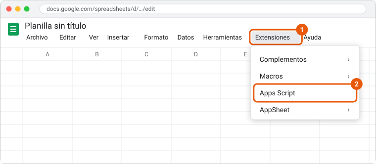
1.2 En el editor, borrá todo lo que tiene Código.gs, pegá el código (Copiar el código,
arriba de esta página) y guardá con el ícono del disquete o Ctrl+S.
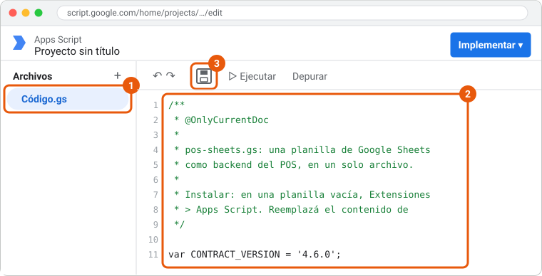
1.3 Arriba a la derecha, Implementar > Nueva implementación.
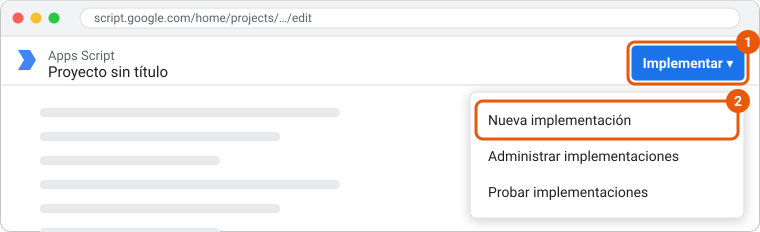
1.4 En el engranaje de "Seleccionar tipo", elegí Aplicación web, completá así y tocá Implementar:
- Ejecutar como: Yo
- Quién tiene acceso: Cualquier persona
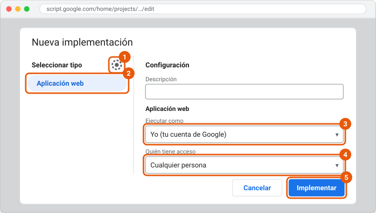
1.5 Google pide autorizar el acceso: Autorizar acceso y elegí tu cuenta. El aviso "Google no verificó esta app" es normal en un código propio: Configuración avanzada > Ir a … (no seguro). Al final, Google tiene que pedir acceso solo a esta planilla; si pide acceso a todas tus hojas de cálculo, cancelá: el código no es el de esta página.
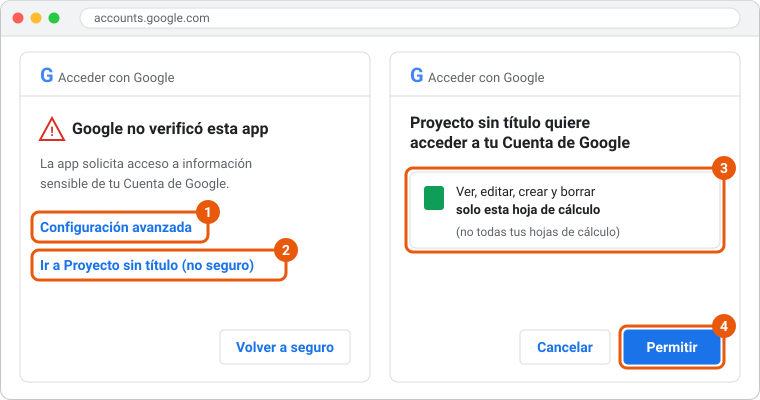
1.6 Copiá la URL de la aplicación web (termina en /exec) y abrila en el navegador: es la
página de tu planilla. Guardala, porque la vas a abrir desde cada caja.
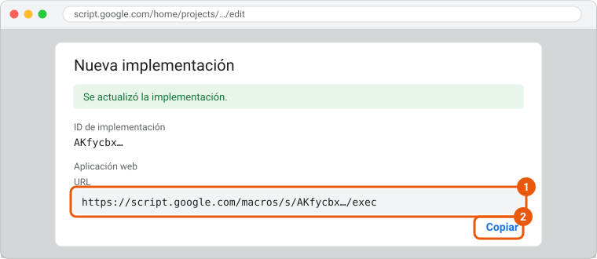
"Cualquier persona" no deja que nadie edite tu planilla: el POS escribe a través del código, con tus permisos, y la página nunca borra nada sin que lo permitas.
2. Preparar la planilla
2.1 En la página de la planilla, completá el nombre del comercio, la sucursal y la caja, y elegí con qué empezar:
- Ferretería, Kiosco o Almacén: con productos, clientes y diez días de ventas de ejemplo, para probar con algo parecido a un comercio de verdad.
- Vacía: sin datos, para cargar tus productos y tus clientes.
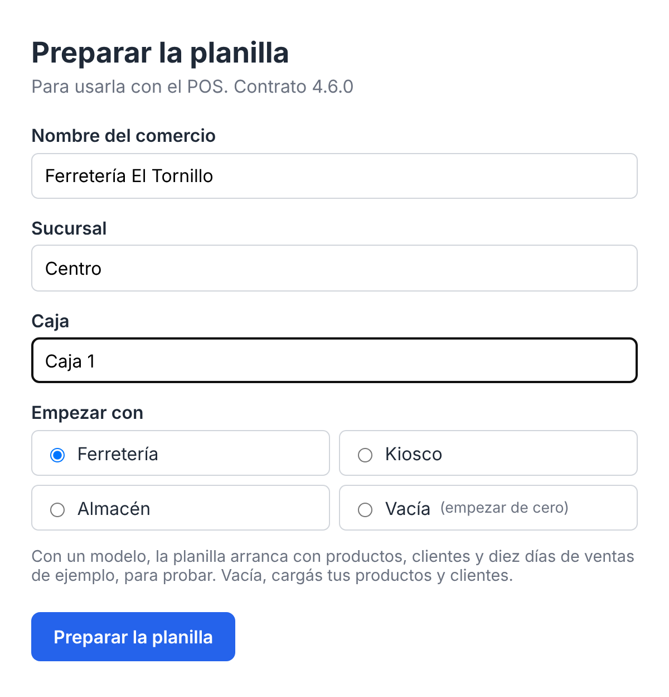
2.2 Tocá Preparar la planilla. En unos segundos la planilla tiene sus pestañas, empezando por el Tablero (las ventas del día, de la semana, los medios de pago, lo más vendido y el fiado), y la página ofrece Abrir la planilla y Abrir el POS.
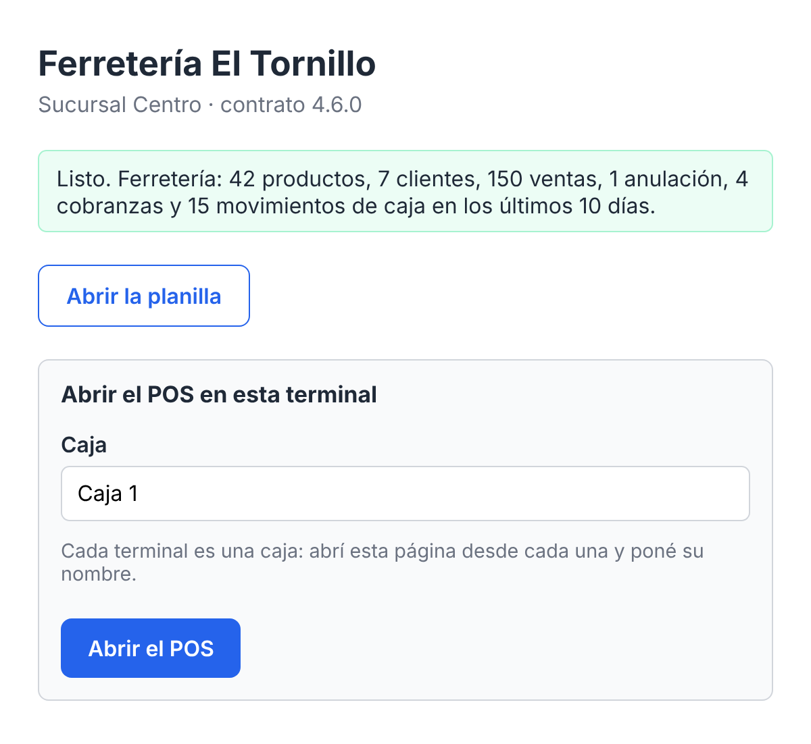
Tus productos y tus clientes se cargan en las pestañas Productos y Clientes, cuando quieras: el POS los trae solo.
3. Conectar cada caja
3.1 En la terminal, abrí la página de la planilla (la URL del paso 1.6; también está en el Tablero, en Abrir el POS en una caja).
3.2 Poné el nombre de esta caja (por ejemplo, "Caja 2") y tocá Abrir el POS.
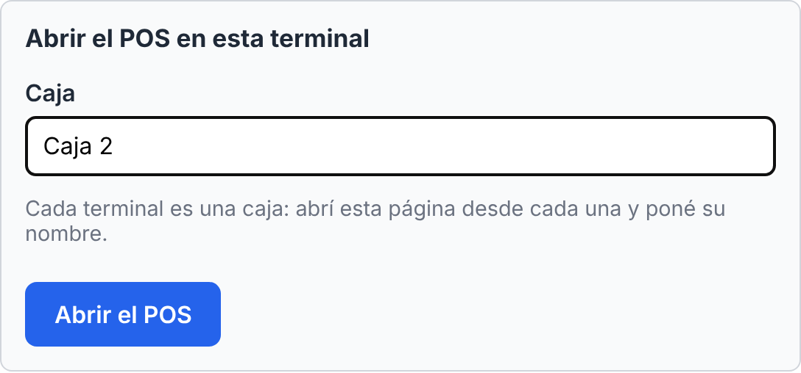
3.3 El POS se abre conectado a la planilla, con la sucursal y la caja cargadas, listo para vender.
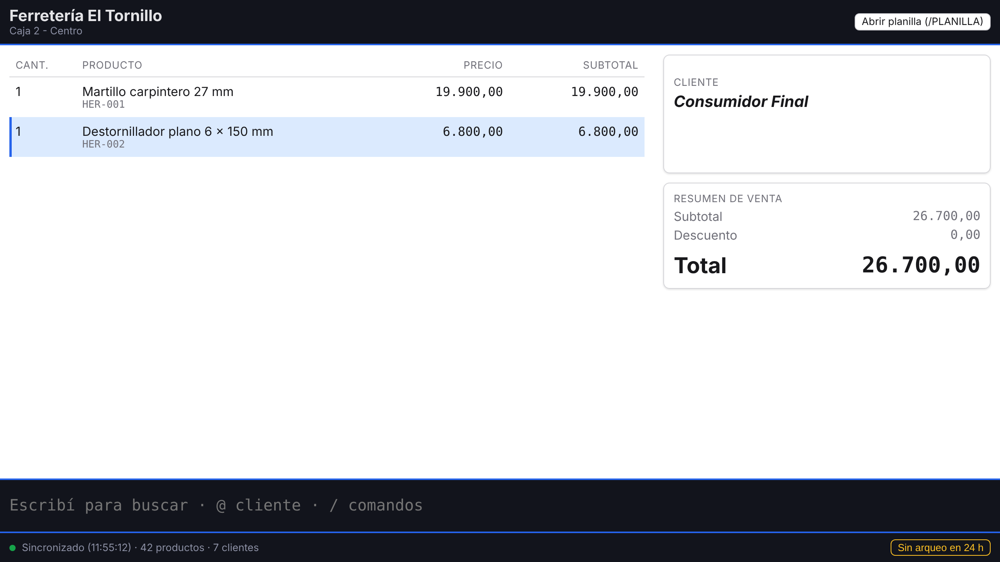
Si la terminal ya tenía datos de otra conexión, o la planilla tiene un secreto, el POS abre su configuración con todo precargado: elegí qué hacer con los datos (o cargá el secreto) y seguí.
Repetí estos pasos en cada caja, cada una con su nombre.
Actualizar el puente
1. Copiá el código nuevo con Copiar el código, en esta página.
2. En la planilla, Extensiones > Apps Script: reemplazá todo el contenido de Código.gs y
guardá. Si el proyecto tiene bridge.gs y columnas.gs (de una versión anterior), borralos.
3. Implementar > Administrar implementaciones, el lápiz, Versión: Nueva versión y Implementar.
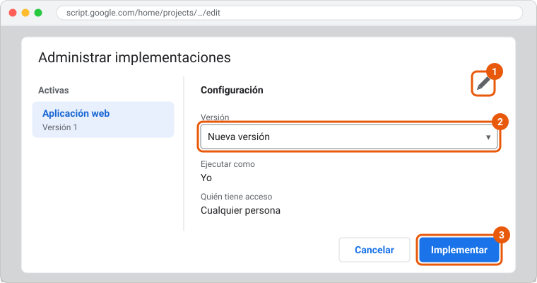
La URL no cambia y las cajas siguen conectadas, sin tocar nada. No uses Nueva implementación: da otra URL, y cada caja tendría que conectarse de nuevo.
Volver a empezar
Reiniciar borra todas las pestañas de la planilla (también las que agregaste vos) y vuelve al formulario del paso 2.
1. En la pestaña Configuración de la planilla, poné Sí en "Permitir reiniciar".
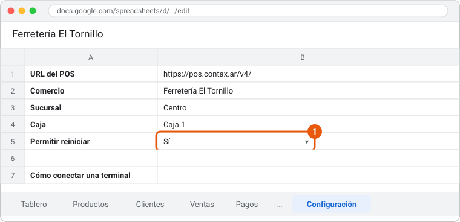
2. Recargá la página de la planilla y tocá Reiniciar la planilla.
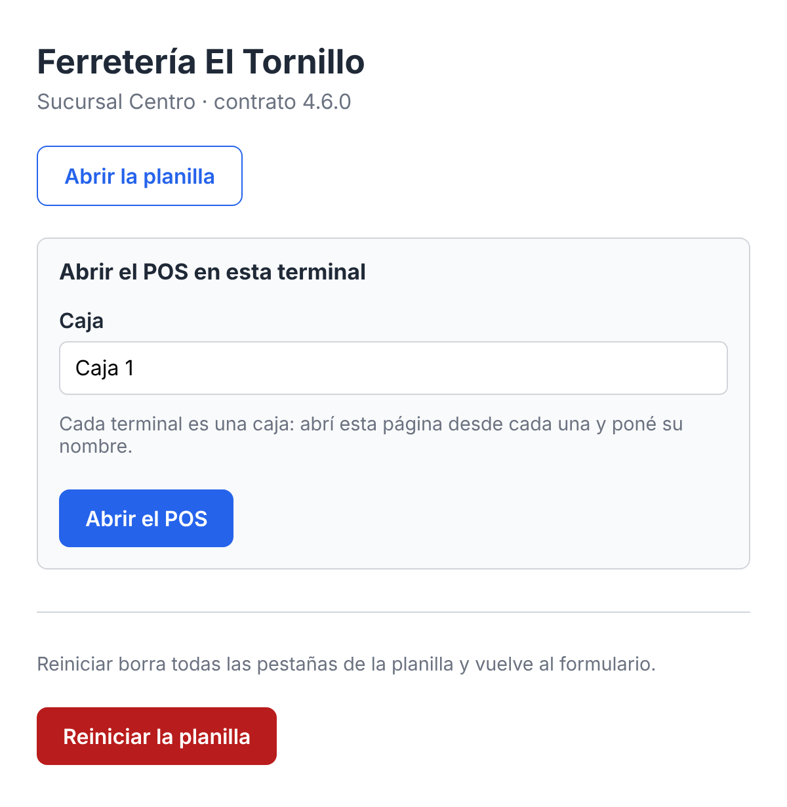
3. En cada caja que estaba conectada, volvé a abrir el POS desde la página y elegí borrar sus datos.
(Opcional) Proteger la planilla con un secreto
Sin secreto, quien tenga la URL de la aplicación web puede mandarle ventas a la planilla. Para que solo tus cajas puedan:
1. En Apps Script, Configuración del proyecto (el engranaje) > Propiedades de la secuencia
de comandos > Agregar propiedad de secuencia de comandos: SHARED_SECRET y el valor que
quieras. Guardá.
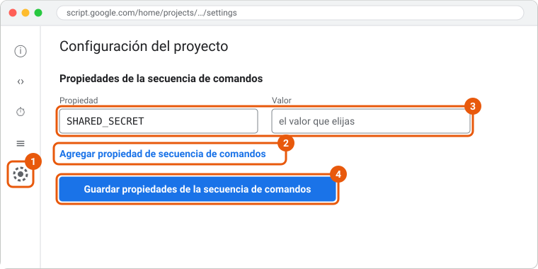
2. En cada caja, abrí el POS desde la página de la planilla como en el paso 3: la configuración
se abre con todo cargado menos el secreto. Cargalo en Secreto compartido y seguí. En una caja
ya conectada, lo mismo desde /CONFIG.
El link de la página nunca lleva el secreto: se carga a mano en cada caja.
Para saber más
La referencia del puente tiene el resto: qué hace y qué no, los permisos, el Tablero, la pestaña Configuración, el portal, cómo se edita la planilla, qué guarda cada venta, el contrato del puente y sus limitaciones.